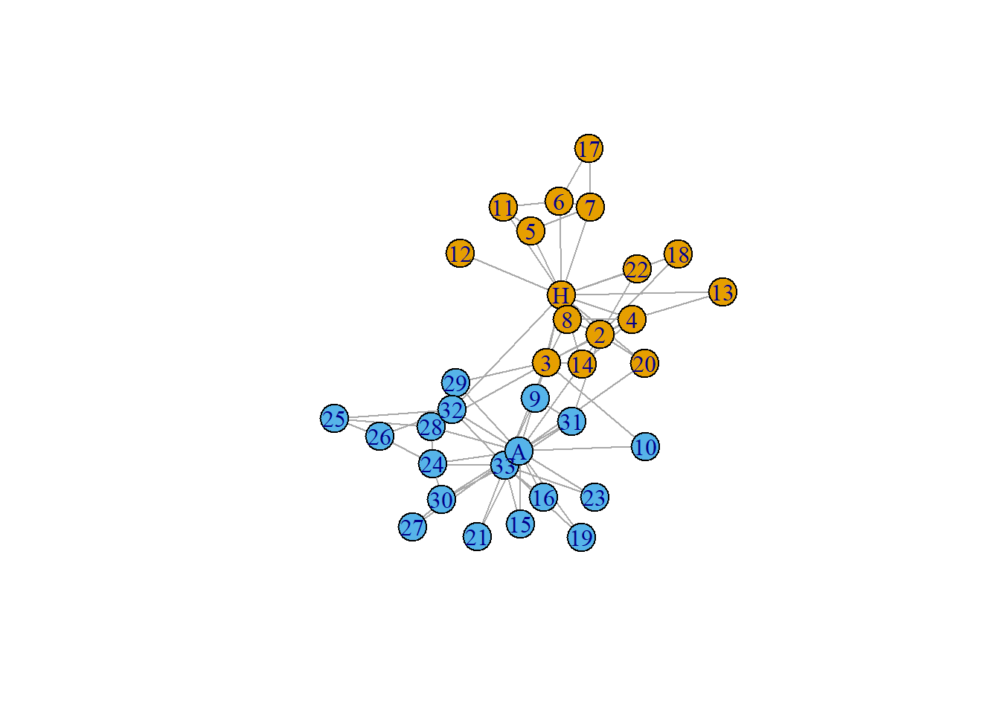

Chapter 24 Network Analytics/Graph theory in R
The content is under development/Finalisation.
Network analysis has emerged as a pivotal tool in the realm of audit analytics, offering auditors a powerful method to uncover intricate relationships and patterns within vast datasets. Leveraging the rich ecosystem of packages in R, auditors can construct, visualize, and analyze networks with ease, enabling them to detect anomalies, identify key players, and assess the robustness of interconnected systems. From detecting fraud to optimizing supply chains, the application of network analysis in auditing not only enhances risk assessment but also empowers auditors to make data-driven decisions with greater precision and confidence. So let’s dive in.
24.1 An introduction to Graph theory
Network analysis applies concepts of graph theory, which is branch of mathematics, to analyze and interpret complex systems, such as social networks, transportation networks, and biological networks, to uncover patterns, structures, and dynamics within these systems. Graph theory focuses on the properties and characteristics of graphs, such as paths, cycles, connectivity, and graph coloring.
24.1.1 Definition of a graph
By definition, a graph is a mathematical structure consisting of a set of vertices (or nodes or actors) and a set of edges (or connections or links) that establish relationships between these vertices. Mathematically a graph \(G = (V, E)\) consists of a set \(V\) of vertices/nodes and a set \(E\) of edges/links, as illustrated in 24.1. A vertex \(V\) may represent real-world objects such as persons, computers, products, etc. An edge \(E\), on the other hand may represent the relationship between the nodes, it connects, such as friendship between those persons, or physical connection between the computers, etc.Figure 24.1: An Example Graph
Types of graph
Example graph shown in figure 24.1 is basically an Undirected Graph, where the edges between the nodes aren’t directed. E.g. A connection between two computers. On the other hand, if the edge(s) between the nodes is following a direction or specific order, then the graph is known as Directed Graph. Example on twitter (now X) an user may follow other users without being followed by them in turn, as shown in figure 24.2.
Figure 24.2: An Example Directed Graph
Moreover, sometimes an edge may be connected with itself. In this case, the edge is called as self-edge and such graphs (allowing vertices to join themselves) are called as Pseudographs. As real-world example of pseudographs think of transactions between different firms. A firm should usually transact with other firms but sometimes it may transact within its own account maintained separately for a specific purpose. Example in figure 24.3 (left) node E is connected with itself.
Further sometimes there may be more than one edge connecting same pair of nodes (in same order). Such edges are called as multi-edges; e.g. in figure 24.3 (right) there are two edges connecting from B to E. In real-world example we can think of multiple flights operating between same pair of airports by different carriers.
Figure 24.3: Examples of Self Edge and Multi Edge
Complete Graphs are graphs where all pairs of vertices are connected by an edge. Example complete graphs are shown in the figure 24.4. While in real-world instances of complete graphs may be rare, it maybe possible that a few of the nodes/vertices in a bigger graph show complete mutual relationship. In other words, the graph of those vertices if taken as a sub-graph is complete, then that complete subgraph is called as clique. As an example think of a subgraph consisting of nodes B, D, E and G in graph shown in 24.1 is a clique.
Figure 24.4: Examples of Complete Graphs
Before moving on, let us learn about two more specific types of graph. One is known as Bipartite Graphs. These are actually graphs having two mutually disjoint set of vertices with condition that no pair within the same set is connected. E.g. graph in figure 24.5 (Left) is a bipartite graph. We can think of two departments where edges represent correspondence between officials between the two departments. Actually the idea can be extended to form k-partite graphs having k such disjoint sets.
Another category is Trees, representing hierarchical relationships among entities/individuals. In a tree, vertices are connected through edges or links, making it a type of graph. For a graph to qualify as a tree, there must be precisely one path between any pair of vertices when considered undirected. The bipartite graph illustrated in the example figure 24.5 (on the left) can also be interpreted as a tree because it meets this criterion. Refer figure 24.5 (Right) wherein the same graph has been redrawn as a tree.
Figure 24.5: Bipartite and Tree Graph example
24.1.2 Vertex and Edge attributes
Recall that a Graph basically consists of two sets \((V, E)\) wherein \(V\) is a set of vertices and \(E\) is set of edges. In their simplest form, these sets can be conceived as lists, but both can be enriched by incorporating additional attributes. E.g. if a graph consists of airports and flights operating between them, the set \(V\) representing airports could include attributes such as, (i) names, (ii) types whether domestic or international, (iii) geographical coordinates, (iv) State/Country in which located, etc. and so on. Similarly, the set of edges \(E\) could encompass additional details like (i) the count of flights operating between two airports, (ii) the airlines servicing those flights, (iii) the aerial distance between airports, and so on. An example may be seen in figure 24.6.
Figure 24.6: Examples of Vertex and Edge properties
24.2 Practical approach for creating graphs in R
24.2.1 Packages to use
One of the best packages for creating and analysing graphs in R is igraph. Package igraph was originally developed by Gábor Csárdi and Tamás Nepusz, and is written in the C programming language in order to achieve good performance.
Let’s load it.
library(igraph)Apart from igraph which in itself is a complete package for network analysis, we will also be using visNetwork and ggraph packages. Former is used to create interactive network charts and latter is used to create ggplot2 compatible plots so that these can be customised further in familiar environment.
Let’s now proceed to learn creating graph objects in R. Actually graph objects can be created in many ways, out of which we will learn three methods. These methods will serve our purpose most of the time.
24.2.2 Creating a graph from data frame
When working with data analysis, data frames are often our primary tool. Consequently, the most common and practical approach to creating graphs in igraph involves utilizing data.frame objects. Essentially, the data.frame objects we use to generate graphs should consist of at least two columns, where each row represents an edge within the intended graph. The first column is interpreted as the 'from' node, while the second column is considered the 'to' node, regardless of their respective column names. To achieve this, we employ the graph_from_data_frame() function from the igraph library. Its syntax is as follows:
graph_from_data_frame(
d = , # data.frame
directed = TRUE,
vertices = NULL # optional data.frame of vertices
)Example-1: Let’s construct a graph object from a data frame containing four edges.
# Example data frame of edges
df <- data.frame(
from = c(1, 1, 3, 3),
to = c(2, 3, 5, 4)
)
# Creating graph object
gr1 <- graph_from_data_frame(df)
# Let's print it
gr1## IGRAPH 169a793 DN-- 5 4 --
## + attr: name (v/c)
## + edges from 169a793 (vertex names):
## [1] 1->2 1->3 3->5 3->4Here, we observe that a graph object named gr1 has been successfully generated and printed in the console, providing us with pertinent information about it.
- The first line always begins with
IGRAPH, followed by seven characters, which represent the initial characters of a unique graph ID. Interested users can employ thegraph_id()function to retrieve the full ID if needed. - Subsequently, a four-letter character string is displayed. In this example, two are
UN, followed by two blanks or--. These characters signify the following:- The first letter distinguishes between directed (
D) and undirected (U) graphs. - The second letter,
N, denotes named graphs, i.e., graphs with the name vertex attribute set. - The third letter,
W, indicates weighted graphs, i.e., graphs with the weight edge attribute set. - The fourth letter,
B, signifies bipartite graphs, i.e., graphs with the type vertex attribute set.
- The first letter distinguishes between directed (
- Following this is the count of vertices and edges, separated by two dashes.
- Starting from the second line, the graph’s attributes are listed, separated by commas. Each attribute’s type – graph (
g), vertex (v), or edge (e) – and data type – character (c), numeric (n), logical (l), or other (x) – are specified. - In the last line a few of the edges are printed.
Readers may notice that all four edges from our df have been imported into the gr1 graph and are displayed accordingly.
Now directed argument by default is TRUE so by default the graph created is directed as also confirmed by first alphabet D in the four character string. So let’s check how an undirected graph is created and printed.
## IGRAPH 169e8fc UN-- 5 4 --
## + attr: name (v/c)
## + edges from 169e8fc (vertex names):
## [1] 1--2 1--3 3--5 3--4All good. First letter is now U representing undirected graph. Readers may also notice another change while printing the edges that these are now printed without any arrow mark. Here we created another graph object just to show how the directed argument is used. However, any existing directed graph can be converted to an undirected graph using function as.directed(). Check-
## IGRAPH 16a22ab UN-- 5 4 --
## + attr: name (v/c)
## + edges from 16a22ab (vertex names):
## [1] 1--3 1--2 3--5 3--4Now what about the last argument vertices = in the function graph_from_data_frame? In most of the cases, the d argument having data of edges may be sufficient, yet sometimes a graph may contain isolates (isolated nodes not connected with any other edge). So to include those vertices, we may use vertices argument. Additionally to include any of the vertex property in the graph being created, we may use that as an additional columns in the data frame. Similar to this analogy, all additional columns in our edges dataset (after first two columns) will be used to set edge properties.
Example-2: Let’s add an isolated edge "6" in our graph.
df_v <- data.frame(
id = c(1, 2, 3, 4, 5, 6),
name = c("Ram", "Shyam", "Alex", "Bob", "Charlie", "Kumar")
)
# Creating graph object
gr3 <- graph_from_data_frame(df, directed = FALSE, vertices = df_v)
# Let's print it
gr3## IGRAPH 16a7df9 UN-- 6 4 --
## + attr: name (v/c)
## + edges from 16a7df9 (vertex names):
## [1] Ram --Shyam Ram --Alex Alex--Charlie Alex--BobNotice the change in number of edges now. Also notice that the edges printed with different names due to presence of column named name in vertices data frame.
Readers may try to add additional columns in edge dataset/data frame and create respective graph objects.
24.2.3 Creating a graph from Edge list
Creating graphs from edge-lists is nearly the same approach as creating graphs from data frames. Only difference is absence of vertices argument here. The syntax is
graph_from_edgelist(el, directed = TRUE)Here el should be a two column matrix, character or numeric, representing edges; and thus that’s another difference here.
edges <- data.frame(
origin = c("Ram", "Ram", "Alex", "Alex"),
dest = c("Shyam", "Alex", "Charlie", "Bob")
)
edges <- as.matrix(edges)
# Now let's create a graph
gr4 <- graph_from_edgelist(edges, directed = FALSE)
# And print it
gr4## IGRAPH 16abc30 UN-- 5 4 --
## + attr: name (v/c)
## + edges from 16abc30 (vertex names):
## [1] Ram --Shyam Ram --Alex Alex--Charlie Alex--BobFine enough. We have successfully created an undirected graph with 5 nodes and 4 edges.
24.2.4 Creating a graph from adjacency matrix
But what exactly is an adjacency matrix? It’s a square matrix sized \(n \times n\), where both the rows and columns are indexed by \(n\) vertices. The \((i, j)\)-th entry of this matrix holds significance:
- In a graph devoid of any edge attribute such as
weight, a value of1signifies the existence of an edge from vertex \(v_{i}\) to \(v_j\). Conversely, a value of0indicates the absence of an edge between those two vertices. - However, in graphs equipped with edge attributes like
weight, the corresponding numerical value represents the weight of the edge from vertex \(v_{i}\) to \(v_j\).
Example: Let’s try to create graph as shown in 24.6 through corresponding adjacency matrix. First, without weights.
# Let's create the matrix
adj_mat <- structure(c(0, 1, 1, 1, 1, 0, 1, 0, 1, 1, 0, 1, 1, 0, 1, 0), dim = c(4L,
4L), dimnames = list(c("DEL", "BNG", "BOM", "PNQ"), c("DEL",
"BNG", "BOM", "PNQ")))
adj_mat## DEL BNG BOM PNQ
## DEL 0 1 1 1
## BNG 1 0 1 0
## BOM 1 1 0 1
## PNQ 1 0 1 0## IGRAPH 16afad1 DN-- 4 10 --
## + attr: name (v/c)
## + edges from 16afad1 (vertex names):
## [1] DEL->BNG DEL->BOM DEL->PNQ BNG->DEL BNG->BOM BOM->DEL BOM->BNG BOM->PNQ
## [9] PNQ->DEL PNQ->BOMSo far so good. Directed graph (default) has been created with edges between airports both to and from separately. Now let us try to create weighted graph for the same data where weights will now be the distance between those airports.
# Let's create the matrix
adj_mat2 <- structure(c(0, 1750, 1150, 1200, 1750, 0, 850, 0, 1150, 850,
0, 120, 1200, 0, 120, 0), dim = c(4L, 4L), dimnames = list(c("DEL",
"BNG", "BOM", "PNQ"), c("DEL", "BNG", "BOM", "PNQ")))
adj_mat2## DEL BNG BOM PNQ
## DEL 0 1750 1150 1200
## BNG 1750 0 850 0
## BOM 1150 850 0 120
## PNQ 1200 0 120 0# Let's create the graph
gr6 <- graph_from_adjacency_matrix(adj_mat2, weighted = TRUE)
# Let's print it
gr6## IGRAPH 16b3cfe DNW- 4 10 --
## + attr: name (v/c), weight (e/n)
## + edges from 16b3cfe (vertex names):
## [1] DEL->BNG DEL->BOM DEL->PNQ BNG->DEL BNG->BOM BOM->DEL BOM->BNG BOM->PNQ
## [9] PNQ->DEL PNQ->BOMThis time notice that edge property named weight with numeric type has been added to the graph.
24.2.5 Getting data back from graph objects
Once the graph objects have been created getting the data back both in data.frame or adjacency matrix is pretty easy. For this we can use either of igraph functions as_data_frame() or as_adjacency_matrix(). Let check both these functions.
as_data_frame(): Since packagetibble’s earlier versions also had a same named function, it is safe to useigraph::as_data_frame()to avoid conflict and bug in the code. It takes a igraph object and outputs adata.frame. For example let’s get the data back fromgr6object created in above code. Since thegr6was created from an adjacency matrix it will be amusing to see if the function is working correctly.
## from to weight
## 1 DEL BNG 1750
## 2 DEL BOM 1150
## 3 DEL PNQ 1200
## 4 BNG DEL 1750
## 5 BNG BOM 850
## 6 BOM DEL 1150
## 7 BOM BNG 850
## 8 BOM PNQ 120
## 9 PNQ DEL 1200
## 10 PNQ BOM 120From the output above, it is clear that the function worked correctly. Since the graph was directed the edges have been created from both sides. So let’s also check the function’s output in case of undirected graph.
## from to weight
## 1 DEL BNG 3500
## 2 DEL BOM 2300
## 3 BNG BOM 1700
## 4 DEL PNQ 2400
## 5 BOM PNQ 240Absolutely fine. But notice that weights of the edges has been combined while converting directed graph to an undirected graph. That also can be tackled of while using as.undirected() by tweaking the argument edge.attr.comb which basically takes a function to combine the separate edge attributes. So,
## from to weight
## 1 DEL BNG 1750
## 2 DEL BOM 1150
## 3 BNG BOM 850
## 4 DEL PNQ 1200
## 5 BOM PNQ 120It will not be out of place to mention here that this function has an additional argument what, in case requirement is to export "vertex" and/or "edges" data. If the argument is set to "both" the two data-sets will be returned in a list.
## name
## DEL DEL
## BNG BNG
## BOM BOM
## PNQ PNQas_adjacency_matrix(): Similar to above function, her this function will take an igraph object and returns adjacencymatrixhere instead. So let’s check it also.
## 4 x 4 sparse Matrix of class "dgCMatrix"
## DEL BNG BOM PNQ
## DEL . 1 1 1
## BNG 1 . 1 .
## BOM 1 1 . 1
## PNQ 1 . 1 .We may notice that adjacency matrix has been returned but without weights. So to map weights we may use its attr argument which by default is NULL.
as.undirected(gr6, edge.attr.comb = list(weight = mean)) %>%
igraph::as_adjacency_matrix(attr = "weight")## 4 x 4 sparse Matrix of class "dgCMatrix"
## DEL BNG BOM PNQ
## DEL . 1750 1150 1200
## BNG 1750 . 850 .
## BOM 1150 850 . 120
## PNQ 1200 . 120 .24.3 Adding vertex and/or edge attributes to an existing igraph object
We’ve previously explored how vertex and edge properties can be incorporated into an igraph during its creation. However, there may be instances where the need arises to add vertex and/or edge properties to an igraph object after its creation or to an existing igraph object. Before delving into that, let’s first understand how we can retrieve existing edges, nodes, or their attributes from an existing igraph.
- Getting vertices of an
igraphusingV()
## + 4/4 vertices, named, from 16b3cfe:
## [1] DEL BNG BOM PNQ- Getting edges of an
igraphusingE()
## + 10/10 edges from 16b3cfe (vertex names):
## [1] DEL->BNG DEL->BOM DEL->PNQ BNG->DEL BNG->BOM BOM->DEL BOM->BNG BOM->PNQ
## [9] PNQ->DEL PNQ->BOM- Extracting edge or vertex attribute using
$
## [1] "DEL" "BNG" "BOM" "PNQ"## [1] 1750 1150 1200 1750 850 1150 850 120 1200 120- Adding vertex or edge property similarly using
$
# adding vertex property say "airport_name"
V(gr6)$airport_name <- c("New Delhi", "Bengaluru", "Mumbai", "Pune")
# Single value will be replicated across all values
V(gr6)$country <- "India"
## Let's check it
igraph::as_data_frame(gr6, what = "vertices")## name airport_name country
## DEL DEL New Delhi India
## BNG BNG Bengaluru India
## BOM BOM Mumbai India
## PNQ PNQ Pune IndiaLet’s also add some edge property too.
# Adding edge property "carrier"
E(gr6)$carrier <- c(rep("Vistara",6), rep("Indigo", 2), rep("Air India", 2))
# Adding another edge property on the basis of condition
E(gr6)$route <- case_when(
E(gr6)$weight <= 400 ~ "Short",
E(gr6)$weight <= 1000 ~ "Medium",
TRUE ~ "Long"
)
## Let's check it
igraph::as_data_frame(gr6)## from to weight carrier route
## 1 DEL BNG 1750 Vistara Long
## 2 DEL BOM 1150 Vistara Long
## 3 DEL PNQ 1200 Vistara Long
## 4 BNG DEL 1750 Vistara Long
## 5 BNG BOM 850 Vistara Medium
## 6 BOM DEL 1150 Vistara Long
## 7 BOM BNG 850 Indigo Medium
## 8 BOM PNQ 120 Indigo Short
## 9 PNQ DEL 1200 Air India Long
## 10 PNQ BOM 120 Air India Short24.4 Visualising graphs
After covering graph definition and storage methods, let’s explore techniques for visualizing them. Visualization is crucial for conveying the essence of graphs and networks, with the arrangement and style playing significant roles in communication. Apart from factors related to visual appeal, layout becomes crucial. The relative positioning of vertices greatly impacts visualization effectiveness. This is evident from the comparison of two graphs in Figure 24.7, both representing the same graph depicted earlier in Figure 24.2.
Figure 24.7: Two layouts of a same graph
Nowadays, there are many packages available in R to plot or visualise graph objects while analysing network data. Of these, we will learn two here, (i) one plotting with igraph only though the plots created will be static; and (ii) visNetwork which will be used to create interactive visualizations. Visualizing geographical networks have been discussed separately in an another Chapter.
24.5 Plotting using plot() in igraph
Plotting igraph objects in R is very simple. Just use plot command which basically uses plot.igraph method, and will plot any igraph object using default values to its other arguments. As we have already seen that layouts are important while plotting graph objects, we can set layout using argument layout in plot.
In the following example (Figure 24.8), we can see two random layouts of same graph as we have seen in Figure 24.7.
my_gr <- igraph::as_data_frame(kite) %>%
slice(1:9) %>%
graph_from_data_frame()
set.seed(12345)
plot(my_gr, vertex.size = 25, layout = layout_randomly)
set.seed(54321)
plot(my_gr, vertex.size = 25, layout = layout_randomly)Figure 24.8: Two Other layouts of a same graph
In the above example, we have seen that same layout may generate different coordinates for plotting at each iteration. However, using specific random number seed, we can fix the random layout of graph for purpose of reproducibility.
Before moving on let’s create a famous network/graph of Zachary karate club and learn how to plot network graph effectively. The description available on Wikipedia for this network, I am reproducing here. A social network of a karate club was studied by Wayne W. Zachary for a period of three years from 1970 to 1972.[2] The network captures 34 members of a karate club, documenting links between pairs of members who interacted outside the club. During the study a conflict arose between the administrator “John A” and instructor “Mr. Hi” (pseudonyms), which led to the split of the club into two. Half of the members formed a new club around Mr. Hi; members from the other part found a new instructor or gave up karate. Based on collected data Zachary correctly assigned all but one member of the club to the groups they actually joined after the split.
This graph object is available in package igraphdata from which we can load it.
## This graph was created by an old(er) igraph version.
## Call upgrade_graph() on it to use with the current igraph version
## For now we convert it on the fly...## IGRAPH 4b458a1 UNW- 34 78 -- Zachary's karate club network
## + attr: name (g/c), Citation (g/c), Author (g/c), Faction (v/n), name
## | (v/c), label (v/c), color (v/n), weight (e/n)
## + edges from 4b458a1 (vertex names):
## [1] Mr Hi --Actor 2 Mr Hi --Actor 3 Mr Hi --Actor 4 Mr Hi --Actor 5
## [5] Mr Hi --Actor 6 Mr Hi --Actor 7 Mr Hi --Actor 8 Mr Hi --Actor 9
## [9] Mr Hi --Actor 11 Mr Hi --Actor 12 Mr Hi --Actor 13 Mr Hi --Actor 14
## [13] Mr Hi --Actor 18 Mr Hi --Actor 20 Mr Hi --Actor 22 Mr Hi --Actor 32
## [17] Actor 2--Actor 3 Actor 2--Actor 4 Actor 2--Actor 8 Actor 2--Actor 14
## [21] Actor 2--Actor 18 Actor 2--Actor 20 Actor 2--Actor 22 Actor 2--Actor 31
## [25] Actor 3--Actor 4 Actor 3--Actor 8 Actor 3--Actor 9 Actor 3--Actor 10
## + ... omitted several edges## from to weight
## 1 Mr Hi Actor 2 4
## 2 Mr Hi Actor 3 5
## 3 Mr Hi Actor 4 3
## 4 Mr Hi Actor 5 3
## 5 Mr Hi Actor 6 3
## 6 Mr Hi Actor 7 3
24.5.1 Layouts
Network layouts are algorithms that return coordinates for each node in a network. The igraph library offers several built-in layouts. Learning the algorithm behind these layouts is outside the scope of the chapter.
layout_as_bipartite()Minimize edge-crossings in a simple two-row (or column) layout for bipartite graphs.layout_as_star()A simple layout generator, that places one vertex in the center of a circle and the rest of the vertices equidistantly on the perimeter.layout_as_tree()The Reingold-Tilford graph layout algorithm having a tree-like layout, perfect for trees, acceptable for graphs with not too many cycles.layout_in_circle()Places vertices on a circle, in the order of their vertex ids.layout_nicely()This function tries to choose an appropriate graph layout algorithm for the graph, automatically, based on a simple algorithm.layout_on_grid()places vertices on a rectangular grid, in two or three dimensionslayout_on_sphere()Places vertices on a sphere, approximately uniformly, in the order of their vertex ids.layout_randomly()This function uniformly randomly places the vertices of the graph in two or three dimensions.layout_with_dh()Places vertices of a graph on the plane, according to the simulated annealing algorithm by Davidson and Harel.layout_with_fr()Places vertices on the plane using the force-directed layout algorithm by Fruchterman and Reingold.layout_with_gem()Places vertices on the plane using the GEM force-directed layout algorithm.layout_with_kk()Kamada-Kawai layout algorithm which places the vertices on the plane, or in 3D space, based on a physical model of springs.layout_with_sugiyama()Sugiyama layout algorithm for layered directed acyclic graphs. The algorithm minimized edge crossings.
Discussing each and every layout here will be out of the scope. Readers are advised to play with these different layouts to get a fair understanding of these layouts. However, we may see a few useful layouts as example on karate data.
- Circular layout: Figure 24.9 Left.
- Fruchterman Reingold: Figure 24.9 Right.
- Kamada Kawai: Figure 24.10 Left.
- Sugiyama: Figure 24.10 Right.
- Tree layouts (two representations): Figure 24.11.
igraph_options(vertex.size = 18)
par(mfrow = c(1, 2))
plot(karate, layout = layout_in_circle)
title("Circular layout")
plot(karate, layout = layout_with_fr)
title("Fruchterman - Reingold")Figure 24.9: Two layouts of Zachary Karate Club Network
par(mfrow = c(1, 2))
plot(karate, layout = layout_with_kk)
title("Kamada Kawai")
plot(karate, layout = layout_with_sugiyama)
title("Sugiyama")Figure 24.10: Two Other layouts of Zachary Karate Club Network
par(mfrow = c(1, 2))
plot(karate, layout = layout_as_tree)
title("Default Tree layout")
plot(karate, layout = layout_as_tree(karate, circular = TRUE))
title("circular Tree")Figure 24.11: Two Tree layouts of Zachary Karate Club Network
24.5.2 Displaying Vertex/Edge properties
While the layouts may be important when displaying networks, additional information such as displaying vertex or edge properties such as their categories, etc. may also play an important role. Edge/Vertex properties can both be continuous and/or discrete and visualising those properties in a network shall be through usual properties like color, size, width, shape, etc. Out karate graph object is already colored, so readers may be wondering how the vertices are colored in the representation.
Actually vertices, in an igraph object can be colored using its property attribute color. Let’s retrieve it to understand.
## [1] 1 1 1 1 1 1 1 1 2 2 1 1 1 1 2 2 1 1 2 1 2 1 2 2 2 2 2 2 2 2 2 2 2 2We may see some discrete integer values are stored therein. Let’s reallocate these to specific colors as we want.
## [1] "red" "red" "red" "red" "red" "red"Figure 24.12: Vertex coloring in Network
Similarly, we can use following attributes to display certain properties of vertices/edges in an igraph plot.
- Vertex Properties
size- Size of the vertex. Default is 15color- Fill color of the vertexframe.color- Border color of vertexshape- shape of vertex. Can allocate one of the followingc("circle", "square", "rectangle", "none").label- a character vector used to label the nodeslabel.familyFont family of label. Default isseriflabel.fontFont of label.1means plain (default),2: bold,3italic,4bold italic5symbollabel.cexfont size of label
- Edge properties
colorcolor of edgewidthedge widthltyline type for edges (0or"blank";1or"solid";2or"dashed";3or"dotted";4or"dotdash",6or"twodash")labellabel of edges (label.family,lable.fontandlabel.cexsimilarly for font family, font type and font size respectively)curved: Edge curvature; range is0-1arrow.sizeArrow size (default is 1) (for directed graphs)arrow.widtharrow width, default is1.arrow.mode: arrow mode (0means no arrow;1back,2forward arrow,3both)
Apart from adding these properties to igraph object we can set these properties as arguments in the plot function, just by adding edge. or vertex. before the property/attribute name.
Let’s see some of these through the following example.
# set reproducible layout
set.seed(123)
l_s <- layout_nicely(karate)
# Add vertex labels
V(karate)$label <- stringr::str_remove(V(karate)$name, "Actor ")
# Change shapes of two prominent actors
V(karate)$shape <- ifelse(V(karate)$name %in% c("Mr Hi", "John A"), "rectangle", "circle")
# Change Edge width as per "weight"
E(karate)$width <- E(karate)$weight
plot(karate, layout = l_s, edge.label.cex = 0.7)Figure 24.13: Edge and Vertex properties in Network